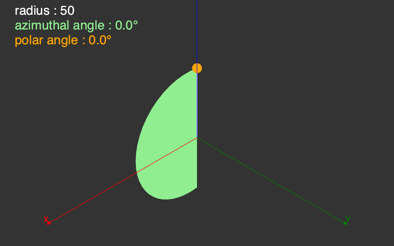

Tools
There are some useful tools that might help you explore the limited 3D world provided by Thebes.jl.
General
Thebes.axes3D — Functionaxes3D(n=100)Draw labelled 3D axes at (0, 0, 0) with length n.
Thebes.carpet — Functioncarpet(n; kind=:circular)Draw a circular carpet centered at the origin, using current Luxor parameters.
If kind is not :circular, the carpet will be a square.
Points that can't be rendered are not included in the final shape.
Thebes.drawcube — Functiondrawcube(n=10, action=:stroke)Draw a cube. drawcube(1) draws a wireframe unit cube.
@drawsvg begin
background("grey20")
helloworld()
sethue("grey40")
carpet(400)
drawcube(150)
axes3D()
end 800 400![](data:image/svg+xml;utf-8,<?xml version="1.0" encoding="UTF-8"?>
<svg xmlns="http://www.w3.org/2000/svg" xmlns:xlink="http://www.w3.org/1999/xlink" width="800" height="400" viewBox="0 0 800 400">
<defs>
<g>
<g id="glyph-724463-0-0">
<path d="M 2.203125 0 L 0.328125 0 L 4.4375 -5.882812 L 0.585938 -11.476562 L 2.53125 -11.476562 L 5.460938 -7.085938 L 8.367188 -11.476562 L 10.21875 -11.476562 L 6.367188 -5.882812 L 10.40625 0 L 8.476562 0 L 5.382812 -4.71875 Z M 2.203125 0 "/>
</g>
<g id="glyph-724463-0-1">
<path d="M 0.328125 -11.476562 L 2.140625 -11.476562 L 5.4375 -5.960938 L 8.734375 -11.476562 L 10.554688 -11.476562 L 6.21875 -4.625 L 6.21875 0 L 4.664062 0 L 4.664062 -4.625 Z M 0.328125 -11.476562 "/>
</g>
<g id="glyph-724463-0-2">
<path d="M 0.367188 -1.289062 L 7.40625 -10.109375 L 0.882812 -10.109375 L 0.882812 -11.476562 L 9.40625 -11.476562 L 9.40625 -10.140625 L 2.328125 -1.367188 L 9.40625 -1.367188 L 9.40625 0 L 0.367188 0 Z M 0.367188 -1.289062 "/>
</g>
</g>
</defs>
<rect x="-80" y="-40" width="960" height="480" fill="rgb(20%25, 20%25, 20%25)" fill-opacity="1"/>
<path fill-rule="nonzero" fill="rgb(40%25, 40%25, 40%25)" fill-opacity="1" d="M 739.707031 321.925781 L 759.09375 301.738281 L 774.890625 280.53125 L 786.945312 258.519531 L 795.128906 235.925781 L 799.367188 212.972656 L 799.617188 189.886719 L 795.871094 166.902344 L 788.171875 144.25 L 776.589844 122.15625 L 761.25 100.839844 L 742.296875 80.511719 L 719.925781 61.378906 L 694.359375 43.632812 L 665.851562 27.445312 L 634.683594 12.984375 L 601.175781 0.394531 L 565.652344 -10.207031 L 528.476562 -18.703125 L 490.019531 -25.015625 L 450.660156 -29.082031 L 410.796875 -30.855469 L 370.820312 -30.324219 L 331.140625 -27.492188 L 292.148438 -22.386719 L 254.230469 -15.058594 L 217.773438 -5.582031 L 183.136719 5.945312 L 150.664062 19.417969 L 120.683594 34.691406 L 93.492188 51.617188 L 69.367188 70.023438 L 48.542969 89.730469 L 31.230469 110.539062 L 17.605469 132.242188 L 7.796875 154.621094 L 1.910156 177.453125 L 0 200.511719 L 2.085938 223.5625 L 8.148438 246.382812 L 18.128906 268.734375 L 31.921875 290.402344 L 49.390625 311.167969 Z M 739.707031 321.925781 "/>
<path fill="none" stroke-width="1" stroke-linecap="butt" stroke-linejoin="miter" stroke="rgb(100%25, 0%25, 0%25)" stroke-opacity="1" stroke-miterlimit="10" d="M 400 200 L 337.359375 236.164062 "/>
<path fill-rule="nonzero" fill="rgb(100%25, 0%25, 0%25)" fill-opacity="1" d="M 339.273438 239.480469 L 329.359375 240.785156 L 335.449219 232.851562 "/>
<g fill="rgb(100%25, 0%25, 0%25)" fill-opacity="1">
<use xlink:href="%23glyph-724463-0-0" x="324.024095" y="235.784004"/>
</g>
<path fill="none" stroke-width="1" stroke-linecap="butt" stroke-linejoin="miter" stroke="rgb(0%25, 50.196078%25, 0%25)" stroke-opacity="1" stroke-miterlimit="10" d="M 400 200 L 462.640625 236.164062 "/>
<path fill-rule="nonzero" fill="rgb(0%25, 50.196078%25, 0%25)" fill-opacity="1" d="M 464.550781 232.851562 L 470.640625 240.785156 L 460.726562 239.480469 "/>
<g fill="rgb(0%25, 50.196078%25, 0%25)" fill-opacity="1">
<use xlink:href="%23glyph-724463-0-1" x="465.30403" y="235.784004"/>
</g>
<path fill="none" stroke-width="1" stroke-linecap="butt" stroke-linejoin="miter" stroke="rgb(0%25, 0%25, 100%25)" stroke-opacity="1" stroke-miterlimit="10" d="M 400 200 L 400 127.671875 "/>
<path fill-rule="nonzero" fill="rgb(0%25, 0%25, 100%25)" fill-opacity="1" d="M 396.171875 127.671875 L 400 118.433594 L 403.828125 127.671875 "/>
<g fill="rgb(0%25, 0%25, 100%25)" fill-opacity="1">
<use xlink:href="%23glyph-724463-0-2" x="395.113281" y="113.431992"/>
</g>
</svg>)
There are some basic geometry utility functions - some of them are analogous to their Luxor 2D counterparts.
Distances
Luxor.between — Functionbetween(p1::Point3D, p2::Point3D, x=0.5)
between((p1::Point3D, p2::Point3D), x=0.5)Find a point on a line between two 3D points. If x is 0.5, the returned point should be halfway between them.
Luxor.distance — Functiondistance(p1::Point3D, p2::Point3D)Return the distance between two points.
Luxor.midpoint — Functionmidpoint(pt1::Point3D, pt2::Point3D)Find the midpoint between two points. See also between().
Rotations
The task of rotating points in 3D space is given to Rotations.jl, a powerful and sophisticated package that offers many advanced functions for rotating things in 3D space. For Thebes, you'll probably only need the basics, but there's things like quaternions if you want to get fancy.
This code draws a cyan square lying in the XY plane with a corner at the 3D origin. The square is then rotated about the Z axis by 180° and drawn in purple. Then the square is rotated again, about the X axis, by 90° and drawn in orange.
@drawsvg begin
eyepoint(Point3D(150, 250, 350))
perspective(520)
function drawsquare(ptlist)
pin(ptlist, gfunction = (p3, p2) ->
poly(p2, :fill, close=true))
end
square = [
Point3D(0, 0, 0),
Point3D(100, 0, 0),
Point3D(100, 100, 0),
Point3D(0, 100, 0)
]
sethue("cyan")
drawsquare(square)
sethue("purple")
rotateby!(square, RotZ(π))
drawsquare(square)
sethue("orange")
rotateby!(square, RotX(-π/2))
drawsquare(square)
axes3D(160)
end 800 400![](data:image/svg+xml;utf-8,<?xml version="1.0" encoding="UTF-8"?>
<svg xmlns="http://www.w3.org/2000/svg" xmlns:xlink="http://www.w3.org/1999/xlink" width="800" height="400" viewBox="0 0 800 400">
<defs>
<g>
<g id="glyph-717632-0-0">
<path d="M 2.203125 0 L 0.328125 0 L 4.4375 -5.882812 L 0.585938 -11.476562 L 2.53125 -11.476562 L 5.460938 -7.085938 L 8.367188 -11.476562 L 10.21875 -11.476562 L 6.367188 -5.882812 L 10.40625 0 L 8.476562 0 L 5.382812 -4.71875 Z M 2.203125 0 "/>
</g>
<g id="glyph-717632-0-1">
<path d="M 0.328125 -11.476562 L 2.140625 -11.476562 L 5.4375 -5.960938 L 8.734375 -11.476562 L 10.554688 -11.476562 L 6.21875 -4.625 L 6.21875 0 L 4.664062 0 L 4.664062 -4.625 Z M 0.328125 -11.476562 "/>
</g>
<g id="glyph-717632-0-2">
<path d="M 0.367188 -1.289062 L 7.40625 -10.109375 L 0.882812 -10.109375 L 0.882812 -11.476562 L 9.40625 -11.476562 L 9.40625 -10.140625 L 2.328125 -1.367188 L 9.40625 -1.367188 L 9.40625 0 L 0.367188 0 Z M 0.367188 -1.289062 "/>
</g>
</g>
</defs>
<rect x="-80" y="-40" width="960" height="480" fill="rgb(20%25, 20%25, 20%25)" fill-opacity="1"/>
<path fill-rule="nonzero" fill="rgb(0%25, 100%25, 100%25)" fill-opacity="1" d="M 400 200 L 294.484375 248.644531 L 351.496094 349.074219 L 466.777344 285.515625 Z M 400 200 "/>
<path fill-rule="nonzero" fill="rgb(50.196078%25, 0%25, 50.196078%25)" fill-opacity="1" d="M 400 200 L 491.289062 157.914062 L 432.828125 99.109375 L 347.582031 132.875 Z M 400 200 "/>
<path fill-rule="nonzero" fill="rgb(100%25, 64.705882%25, 0%25)" fill-opacity="1" d="M 400 200 L 491.289062 157.914062 L 508.328125 69.203125 L 400 112.113281 Z M 400 200 "/>
<path fill="none" stroke-width="1" stroke-linecap="butt" stroke-linejoin="miter" stroke="rgb(100%25, 0%25, 0%25)" stroke-opacity="1" stroke-miterlimit="10" d="M 399.960938 200.046875 L 231.296875 277.808594 "/>
<path fill-rule="nonzero" fill="rgb(100%25, 0%25, 0%25)" fill-opacity="1" d="M 232.898438 281.28125 L 222.90625 281.675781 L 229.691406 274.332031 "/>
<g fill="rgb(100%25, 0%25, 0%25)" fill-opacity="1">
<use xlink:href="%23glyph-717632-0-0" x="217.569189" y="276.675547"/>
</g>
<path fill="none" stroke-width="1" stroke-linecap="butt" stroke-linejoin="miter" stroke="rgb(0%25, 50.196078%25, 0%25)" stroke-opacity="1" stroke-miterlimit="10" d="M 399.960938 200.046875 L 510.640625 341.804688 "/>
<path fill-rule="nonzero" fill="rgb(0%25, 50.196078%25, 0%25)" fill-opacity="1" d="M 513.65625 339.449219 L 516.324219 349.085938 L 507.625 344.160156 "/>
<g fill="rgb(0%25, 50.196078%25, 0%25)" fill-opacity="1">
<use xlink:href="%23glyph-717632-0-1" x="510.989956" y="344.085681"/>
</g>
<path fill="none" stroke-width="1" stroke-linecap="butt" stroke-linejoin="miter" stroke="rgb(0%25, 0%25, 100%25)" stroke-opacity="1" stroke-miterlimit="10" d="M 399.960938 200.046875 L 399.945312 49.25 "/>
<path fill-rule="nonzero" fill="rgb(0%25, 0%25, 100%25)" fill-opacity="1" d="M 396.121094 49.25 L 399.945312 40.011719 L 403.773438 49.25 "/>
<g fill="rgb(0%25, 0%25, 100%25)" fill-opacity="1">
<use xlink:href="%23glyph-717632-0-2" x="395.059639" y="35.011952"/>
</g>
</svg>)
The most useful rotation functions are RotX(), RotY(), RotZ(), RotXY(), and RotXYZ(), which rotate around the axes. All the other permutations are available. A RotXYZ() rotation takes three angles. The right-most rotation is applied first, so RotXYZ() applies the Z rotation, followed by the Y, then followed by the X.
You can compose two or more rotations by multiplying them together, eg RotX(π/2) * RotZ(π/4).
The rotation functions without ! return new points or arrays of points.
There are also functions that accept a second 3D point, the about point. The rotation is applied around that point, rather than an axis. In the next example, the square is rotated in Z about the corner point at Point3D(100, 100, 0) and drawn in green.
@drawsvg begin
background("grey20")
setlinejoin("bevel")
eyepoint(Point3D(350, 350, 350))
perspective(400)
function drawsquare(ptlist)
pin(ptlist, gfunction=(p3, p2) ->
poly(p2, :fill, close=true))
end
square = [
Point3D(0, 0, 0),
Point3D(100, 0, 0),
Point3D(100, 100, 0),
Point3D(0, 100, 0)
]
sethue("grey40")
drawsquare(square)
sethue("green")
rotateby!(square, Point3D(100, 100, 0), RotZ(π))
drawsquare(square)
axes3D(160)
end 800 400![](data:image/svg+xml;utf-8,<?xml version="1.0" encoding="UTF-8"?>
<svg xmlns="http://www.w3.org/2000/svg" xmlns:xlink="http://www.w3.org/1999/xlink" width="800" height="400" viewBox="0 0 800 400">
<defs>
<g>
<g id="glyph-337961-0-0">
<path d="M 2.203125 0 L 0.328125 0 L 4.4375 -5.882812 L 0.585938 -11.476562 L 2.53125 -11.476562 L 5.460938 -7.085938 L 8.367188 -11.476562 L 10.21875 -11.476562 L 6.367188 -5.882812 L 10.40625 0 L 8.476562 0 L 5.382812 -4.71875 Z M 2.203125 0 "/>
</g>
<g id="glyph-337961-0-1">
<path d="M 0.328125 -11.476562 L 2.140625 -11.476562 L 5.4375 -5.960938 L 8.734375 -11.476562 L 10.554688 -11.476562 L 6.21875 -4.625 L 6.21875 0 L 4.664062 0 L 4.664062 -4.625 Z M 0.328125 -11.476562 "/>
</g>
<g id="glyph-337961-0-2">
<path d="M 0.367188 -1.289062 L 7.40625 -10.109375 L 0.882812 -10.109375 L 0.882812 -11.476562 L 9.40625 -11.476562 L 9.40625 -10.140625 L 2.328125 -1.367188 L 9.40625 -1.367188 L 9.40625 0 L 0.367188 0 Z M 0.367188 -1.289062 "/>
</g>
</g>
</defs>
<rect x="-80" y="-40" width="960" height="480" fill="rgb(20%25, 20%25, 20%25)" fill-opacity="1"/>
<path fill-rule="nonzero" fill="rgb(40%25, 40%25, 40%25)" fill-opacity="1" d="M 400 200 L 348.433594 229.773438 L 400 266.550781 L 451.566406 229.773438 Z M 400 200 "/>
<path fill-rule="nonzero" fill="rgb(0%25, 50.196078%25, 0%25)" fill-opacity="1" d="M 400 374.058594 L 465.320312 313.136719 L 400 266.550781 L 334.679688 313.136719 Z M 400 374.058594 "/>
<path fill="none" stroke-width="1" stroke-linecap="butt" stroke-linejoin="miter" stroke="rgb(100%25, 0%25, 0%25)" stroke-opacity="1" stroke-miterlimit="10" d="M 400 200 L 319.964844 246.207031 "/>
<path fill-rule="nonzero" fill="rgb(100%25, 0%25, 0%25)" fill-opacity="1" d="M 321.878906 249.523438 L 311.964844 250.828125 L 318.050781 242.894531 "/>
<g fill="rgb(100%25, 0%25, 0%25)" fill-opacity="1">
<use xlink:href="%23glyph-337961-0-0" x="306.627782" y="245.82777"/>
</g>
<path fill="none" stroke-width="1" stroke-linecap="butt" stroke-linejoin="miter" stroke="rgb(0%25, 50.196078%25, 0%25)" stroke-opacity="1" stroke-miterlimit="10" d="M 400 200 L 480.035156 246.207031 "/>
<path fill-rule="nonzero" fill="rgb(0%25, 50.196078%25, 0%25)" fill-opacity="1" d="M 481.949219 242.894531 L 488.035156 250.828125 L 478.121094 249.523438 "/>
<g fill="rgb(0%25, 50.196078%25, 0%25)" fill-opacity="1">
<use xlink:href="%23glyph-337961-0-1" x="482.700343" y="245.82777"/>
</g>
<path fill="none" stroke-width="1" stroke-linecap="butt" stroke-linejoin="miter" stroke="rgb(0%25, 0%25, 100%25)" stroke-opacity="1" stroke-miterlimit="10" d="M 400 200 L 400 107.582031 "/>
<path fill-rule="nonzero" fill="rgb(0%25, 0%25, 100%25)" fill-opacity="1" d="M 396.171875 107.582031 L 400 98.34375 L 403.828125 107.582031 "/>
<g fill="rgb(0%25, 0%25, 100%25)" fill-opacity="1">
<use xlink:href="%23glyph-337961-0-2" x="395.113281" y="93.34446"/>
</g>
</svg>)
rotateby(point::Point3D, r::Rotation)rotateby(point::Point3D, about::Point3D, r::Rotation)rotateby(ptlist::Array{Point3D, 1}, r::Rotation)rotateby(ptlist::Array{Point3D, 1}, about::Point3D, r::Rotation)rotateby(ptlist::Array{Point3D, 1}, angleX, angleY, angleZ)rotateby(pt::Point3D, angleX, angleY, angleZ)rotateby(point::Point3D, about::Point3D, angleX, angleY, angleZ)rotateby(m::Object, angleX, angleY, angleZ)rotateby(m::Object, pt::Point3D, angleX, angleY, angleZ)
Those with ! mutate the array of points in place. (You can't modify a single point.)
rotateby!(ptlist::Vector{Point3D}, r::RotXYZ{Float64})rotateby!(ptlist::Array{Point3D, 1}, angleX, angleY, angleZ)rotateby!(ptlist::Array{Point3D, 1}, existingpt::Point3D, angleX, angleY, angleZ)rotateby!(ptlist::Array{Point3D, 1}, existingpt::Point3D, r::Rotation)rotateby!(m::Object, angleX, angleY, angleZ)rotateby!(m::Object, pt::Point3D, angleX, angleY, angleZ)
Thebes.rotateX — FunctionrotateX(pt3D::Point3D, rad)Return a new point resulting from rotating the point around the x axis by an angle in radians.
Rotations are anticlockwise when looking along axis from 0 to +axis.
Thebes.rotateY — FunctionrotateY(pt3D::Point3D, rad)Return a new point resulting from rotating the point around the y axis by an angle in radians.
Rotations are anticlockwise when looking along axis from 0 to +axis.
Thebes.rotateZ — FunctionrotateZ(pt3D::Point3D, rad)Return a new point resulting from rotating the point around the z axis by an angle in radians.
Thebes.rotateby! — Functionrotateby!(ptlist::Array{Point3D, 1}, angleX, angleY, angleZ)Modify a list of points by rotating each one around the x, y, and z axes by angleX, angleY, angleZ.
rotateby!(ptlist::Array{Point3D, 1}, existingpt::Point3D, angleX, angleY, angleZ)
rotateby!(ptlist::Array{Point3D, 1}, existingpt::Point3D, r::Rotation)
rotateby!(ptlist::Array{Point3D, 1}, r::Rotation=RotXYZ{Float64})Rotate each point in the list by rotation (or angleX, angleY, angleZ) around another point (or origin).
rotateby!(o::Object, r::Rotation)
rotateby!(o::Object, angleX, angleY, angleZ)Rotate an object through rotation r, or around the x, y, and/or z axis by angleX, angleY, angleZ.
rotateby!(o::Object, pt::Point3D, angleX, angleY, angleZ)
rotateby!(o::Object, pt::Point3D, r::Rotation=RotXYZ(0, 0, 0))Rotate an object around a point by rotation r, or angleX, angleY, angleZ.
Thebes.rotateby — Functionrotateby(pt::Point3D, angleX, angleY, angleZ)
rotateby(ptlist::Array{Point3D, 1}, angleX, angleY, angleZ)
rotateby(point::Point3D, r::Rotation)
rotateby(ptlist::Array{Point3D, 1}, r::Rotation)Return a new point/list of points resulting from rotating around the x, y, and z axes by angleX, angleY, angleZ.
The Z rotation is first, then the Y, then the X.
A 3×3 rotation matrix parameterized by the "Tait-Bryant" XYZ Euler angle convention, consisting of first a rotation about the Z axis by theta3, followed by a rotation about the Y axis by theta2, and finally a rotation about the X axis by theta1.
rotateby(point::Point3D, about::Point3D, angleX, angleY, angleZ)
rotateby(point::Point3D, about::Point3D, r::Rotation)
rotateby(ptlist::Array{Point3D, 1}, about::Point3D, r::Rotation)rotateby(o::Object, angleX, angleY, angleZ)Rotate a copy of the object by angleX, angleY, angleZ.
rotateby(o::Object, pt::Point3D, angleX, angleY, angleZ)
rotateby(o::Object, pt::Point3D, r::Rotation=RotXYZ(0, 0, 0))Rotate a copy of the object around a point by rotation r, or angleX, angleY, angleZ.
Position and scale
You can change the position and scale of things. moveby() makes a copy, moveby!() moves the original.
In the next example, the square is first moved by -100/-100/0, then copies are moved upwards by the loop index i.
@drawsvg begin
background("grey20")
setlinejoin("bevel")
eyepoint(Point3D(400, 400, 500))
perspective(600)
function drawsquare(ptlist)
pin(ptlist, gfunction=(p3, p2) ->
poly(p2, :fill, close=true))
end
square = [
Point3D(0, 0, 0),
Point3D(100, 0, 0),
Point3D(100, 100, 0),
Point3D(0, 100, 0)
]
sethue("grey40")
drawsquare(square)
moveby!(square, Point3D(-100, -100, 0))
setopacity(0.6)
for i in 10:10:200
randomhue()
drawsquare(moveby.(square, Point3D(0, 0, i)))
end
axes3D(200)
end 800 400![](data:image/svg+xml;utf-8,<?xml version="1.0" encoding="UTF-8"?>
<svg xmlns="http://www.w3.org/2000/svg" xmlns:xlink="http://www.w3.org/1999/xlink" width="800" height="400" viewBox="0 0 800 400">
<defs>
<g>
<g id="glyph-727618-0-0">
<path d="M 2.203125 0 L 0.328125 0 L 4.4375 -5.882812 L 0.585938 -11.476562 L 2.53125 -11.476562 L 5.460938 -7.085938 L 8.367188 -11.476562 L 10.21875 -11.476562 L 6.367188 -5.882812 L 10.40625 0 L 8.476562 0 L 5.382812 -4.71875 Z M 2.203125 0 "/>
</g>
<g id="glyph-727618-0-1">
<path d="M 0.328125 -11.476562 L 2.140625 -11.476562 L 5.4375 -5.960938 L 8.734375 -11.476562 L 10.554688 -11.476562 L 6.21875 -4.625 L 6.21875 0 L 4.664062 0 L 4.664062 -4.625 Z M 0.328125 -11.476562 "/>
</g>
<g id="glyph-727618-0-2">
<path d="M 0.367188 -1.289062 L 7.40625 -10.109375 L 0.882812 -10.109375 L 0.882812 -11.476562 L 9.40625 -11.476562 L 9.40625 -10.140625 L 2.328125 -1.367188 L 9.40625 -1.367188 L 9.40625 0 L 0.367188 0 Z M 0.367188 -1.289062 "/>
</g>
</g>
</defs>
<rect x="-80" y="-40" width="960" height="480" fill="rgb(20%25, 20%25, 20%25)" fill-opacity="1"/>
<path fill-rule="nonzero" fill="rgb(40%25, 40%25, 40%25)" fill-opacity="1" d="M 400 200 L 339.5625 240.023438 L 400 286.585938 L 460.4375 240.023438 Z M 400 200 "/>
<path fill-rule="nonzero" fill="rgb(29.366063%25, 64.551011%25, 37.581034%25)" fill-opacity="0.6" d="M 400 128.960938 L 347.054688 159.328125 L 400 193.992188 L 452.945312 159.328125 Z M 400 128.960938 "/>
<path fill-rule="nonzero" fill="rgb(83.954021%25, 88.683554%25, 1.495429%25)" fill-opacity="0.6" d="M 400 123.101562 L 346.613281 153.332031 L 400 187.878906 L 453.386719 153.332031 Z M 400 123.101562 "/>
<path fill-rule="nonzero" fill="rgb(59.058685%25, 8.827247%25, 78.624978%25)" fill-opacity="0.6" d="M 400 117.152344 L 346.164062 147.234375 L 400 181.652344 L 453.835938 147.234375 Z M 400 117.152344 "/>
<path fill-rule="nonzero" fill="rgb(89.864376%25, 54.581583%25, 18.685737%25)" fill-opacity="0.6" d="M 400 111.105469 L 345.710938 141.035156 L 400 175.316406 L 454.289062 141.035156 Z M 400 111.105469 "/>
<path fill-rule="nonzero" fill="rgb(34.459319%25, 13.722577%25, 26.20519%25)" fill-opacity="0.6" d="M 400 104.964844 L 345.246094 134.730469 L 400 168.863281 L 454.753906 134.730469 Z M 400 104.964844 "/>
<path fill-rule="nonzero" fill="rgb(81.319142%25, 67.903389%25, 1.700279%25)" fill-opacity="0.6" d="M 400 98.722656 L 344.773438 128.3125 L 400 162.289062 L 455.226562 128.3125 Z M 400 98.722656 "/>
<path fill-rule="nonzero" fill="rgb(37.98399%25, 61.661944%25, 71.217516%25)" fill-opacity="0.6" d="M 400 92.382812 L 344.292969 121.789062 L 400 155.589844 L 455.707031 121.789062 Z M 400 92.382812 "/>
<path fill-rule="nonzero" fill="rgb(30.035865%25, 5.013179%25, 31.642338%25)" fill-opacity="0.6" d="M 400 85.9375 L 343.804688 115.148438 L 400 148.769531 L 456.195312 115.148438 Z M 400 85.9375 "/>
<path fill-rule="nonzero" fill="rgb(75.008716%25, 19.532483%25, 81.786808%25)" fill-opacity="0.6" d="M 400 79.382812 L 343.308594 108.390625 L 400 141.816406 L 456.691406 108.390625 Z M 400 79.382812 "/>
<path fill-rule="nonzero" fill="rgb(9.197733%25, 45.272614%25, 68.820766%25)" fill-opacity="0.6" d="M 400 72.722656 L 342.800781 101.511719 L 400 134.730469 L 457.199219 101.511719 Z M 400 72.722656 "/>
<path fill-rule="nonzero" fill="rgb(79.876772%25, 93.232841%25, 44.297743%25)" fill-opacity="0.6" d="M 400 65.945312 L 342.285156 94.507812 L 400 127.503906 L 457.714844 94.507812 Z M 400 65.945312 "/>
<path fill-rule="nonzero" fill="rgb(26.328393%25, 40.870972%25, 63.282617%25)" fill-opacity="0.6" d="M 400 59.058594 L 341.761719 87.378906 L 400 120.136719 L 458.238281 87.378906 Z M 400 59.058594 "/>
<path fill-rule="nonzero" fill="rgb(74.653124%25, 75.339288%25, 18.830106%25)" fill-opacity="0.6" d="M 400 52.050781 L 341.226562 80.117188 L 400 112.625 L 458.773438 80.117188 Z M 400 52.050781 "/>
<path fill-rule="nonzero" fill="rgb(36.688905%25, 61.606014%25, 84.299148%25)" fill-opacity="0.6" d="M 400 44.925781 L 340.683594 72.722656 L 400 104.964844 L 459.316406 72.722656 Z M 400 44.925781 "/>
<path fill-rule="nonzero" fill="rgb(74.576935%25, 42.014441%25, 31.052275%25)" fill-opacity="0.6" d="M 400 37.671875 L 340.128906 65.1875 L 400 97.148438 L 459.871094 65.1875 Z M 400 37.671875 "/>
<path fill-rule="nonzero" fill="rgb(13.179136%25, 55.101787%25, 78.720873%25)" fill-opacity="0.6" d="M 400 30.292969 L 339.5625 57.511719 L 400 89.171875 L 460.4375 57.511719 Z M 400 30.292969 "/>
<path fill-rule="nonzero" fill="rgb(2.806877%25, 32.035693%25, 8.007343%25)" fill-opacity="0.6" d="M 400 22.785156 L 338.988281 49.6875 L 400 81.03125 L 461.011719 49.6875 Z M 400 22.785156 "/>
<path fill-rule="nonzero" fill="rgb(43.926157%25, 51.28941%25, 0.00392752%25)" fill-opacity="0.6" d="M 400 15.140625 L 338.402344 41.71875 L 400 72.722656 L 461.597656 41.71875 Z M 400 15.140625 "/>
<path fill-rule="nonzero" fill="rgb(78.24686%25, 64.540024%25, 46.972623%25)" fill-opacity="0.6" d="M 400 7.359375 L 337.804688 33.589844 L 400 64.234375 L 462.195312 33.589844 Z M 400 7.359375 "/>
<path fill-rule="nonzero" fill="rgb(44.576005%25, 30.509481%25, 87.030071%25)" fill-opacity="0.6" d="M 400 -0.5625 L 337.195312 25.304688 L 400 55.570312 L 462.804688 25.304688 Z M 400 -0.5625 "/>
<path fill="none" stroke-width="1" stroke-linecap="butt" stroke-linejoin="miter" stroke="rgb(100%25, 0%25, 0%25)" stroke-opacity="0.6" stroke-miterlimit="10" d="M 400 200.015625 L 277.003906 281.472656 "/>
<path fill-rule="nonzero" fill="rgb(100%25, 0%25, 0%25)" fill-opacity="0.6" d="M 279.117188 284.664062 L 269.300781 286.574219 L 274.890625 278.28125 "/>
<g fill="rgb(100%25, 0%25, 0%25)" fill-opacity="0.6">
<use xlink:href="%23glyph-727618-0-0" x="263.965693" y="281.57443"/>
</g>
<path fill="none" stroke-width="1" stroke-linecap="butt" stroke-linejoin="miter" stroke="rgb(0%25, 50.196078%25, 0%25)" stroke-opacity="0.6" stroke-miterlimit="10" d="M 400 200.015625 L 522.996094 281.472656 "/>
<path fill-rule="nonzero" fill="rgb(0%25, 50.196078%25, 0%25)" fill-opacity="0.6" d="M 525.109375 278.28125 L 530.699219 286.574219 L 520.882812 284.664062 "/>
<g fill="rgb(0%25, 50.196078%25, 0%25)" fill-opacity="0.6">
<use xlink:href="%23glyph-727618-0-1" x="525.362432" y="281.57443"/>
</g>
<path fill="none" stroke-width="1" stroke-linecap="butt" stroke-linejoin="miter" stroke="rgb(0%25, 0%25, 100%25)" stroke-opacity="0.6" stroke-miterlimit="10" d="M 400 200.015625 L 400 64.875 "/>
<path fill-rule="nonzero" fill="rgb(0%25, 0%25, 100%25)" fill-opacity="0.6" d="M 396.171875 64.875 L 400 55.636719 L 403.828125 64.875 "/>
<g fill="rgb(0%25, 0%25, 100%25)" fill-opacity="0.6">
<use xlink:href="%23glyph-727618-0-2" x="395.113281" y="50.635375"/>
</g>
</svg>)
scaleby!() changes the scale of a list of points.
@drawsvg begin
background("grey20")
setlinejoin("bevel")
helloworld()
function drawsquare(ptlist)
pin(ptlist, gfunction=(p3, p2) ->
poly(p2, :fill, close=true))
end
axes3D(160)
square = [
Point3D(0, 0, 0),
Point3D(100, 0, 0),
Point3D(100, 100, 0),
Point3D(0, 100, 0)
]
sethue("red")
drawsquare(square)
sethue("blue")
scaleby!(square, 0.5, 2, 1)
moveby!(square, Point3D(0, 0, 30))
drawsquare(square)
end 800 350![](data:image/svg+xml;utf-8,<?xml version="1.0" encoding="UTF-8"?>
<svg xmlns="http://www.w3.org/2000/svg" xmlns:xlink="http://www.w3.org/1999/xlink" width="800" height="350" viewBox="0 0 800 350">
<defs>
<g>
<g id="glyph-725514-0-0">
<path d="M 2.203125 0 L 0.328125 0 L 4.4375 -5.882812 L 0.585938 -11.476562 L 2.53125 -11.476562 L 5.460938 -7.085938 L 8.367188 -11.476562 L 10.21875 -11.476562 L 6.367188 -5.882812 L 10.40625 0 L 8.476562 0 L 5.382812 -4.71875 Z M 2.203125 0 "/>
</g>
<g id="glyph-725514-0-1">
<path d="M 0.328125 -11.476562 L 2.140625 -11.476562 L 5.4375 -5.960938 L 8.734375 -11.476562 L 10.554688 -11.476562 L 6.21875 -4.625 L 6.21875 0 L 4.664062 0 L 4.664062 -4.625 Z M 0.328125 -11.476562 "/>
</g>
<g id="glyph-725514-0-2">
<path d="M 0.367188 -1.289062 L 7.40625 -10.109375 L 0.882812 -10.109375 L 0.882812 -11.476562 L 9.40625 -11.476562 L 9.40625 -10.140625 L 2.328125 -1.367188 L 9.40625 -1.367188 L 9.40625 0 L 0.367188 0 Z M 0.367188 -1.289062 "/>
</g>
</g>
</defs>
<rect x="-80" y="-35" width="960" height="420" fill="rgb(20%25, 20%25, 20%25)" fill-opacity="1"/>
<path fill="none" stroke-width="1" stroke-linecap="butt" stroke-linejoin="miter" stroke="rgb(100%25, 0%25, 0%25)" stroke-opacity="1" stroke-miterlimit="10" d="M 400 175 L 294.933594 235.660156 "/>
<path fill-rule="nonzero" fill="rgb(100%25, 0%25, 0%25)" fill-opacity="1" d="M 296.847656 238.972656 L 286.933594 240.277344 L 293.019531 232.34375 "/>
<g fill="rgb(100%25, 0%25, 0%25)" fill-opacity="1">
<use xlink:href="%23glyph-725514-0-0" x="281.597688" y="235.278902"/>
</g>
<path fill="none" stroke-width="1" stroke-linecap="butt" stroke-linejoin="miter" stroke="rgb(0%25, 50.196078%25, 0%25)" stroke-opacity="1" stroke-miterlimit="10" d="M 400 175 L 505.066406 235.660156 "/>
<path fill-rule="nonzero" fill="rgb(0%25, 50.196078%25, 0%25)" fill-opacity="1" d="M 506.980469 232.34375 L 513.066406 240.277344 L 503.152344 238.972656 "/>
<g fill="rgb(0%25, 50.196078%25, 0%25)" fill-opacity="1">
<use xlink:href="%23glyph-725514-0-1" x="507.730437" y="235.278902"/>
</g>
<path fill="none" stroke-width="1" stroke-linecap="butt" stroke-linejoin="miter" stroke="rgb(0%25, 0%25, 100%25)" stroke-opacity="1" stroke-miterlimit="10" d="M 400 175 L 400 53.679688 "/>
<path fill-rule="nonzero" fill="rgb(0%25, 0%25, 100%25)" fill-opacity="1" d="M 396.171875 53.679688 L 400 44.441406 L 403.828125 53.679688 "/>
<g fill="rgb(0%25, 0%25, 100%25)" fill-opacity="1">
<use xlink:href="%23glyph-725514-0-2" x="395.113281" y="39.442197"/>
</g>
<path fill-rule="nonzero" fill="rgb(100%25, 0%25, 0%25)" fill-opacity="1" d="M 400 175 L 329.289062 215.824219 L 400 256.648438 L 470.710938 215.824219 Z M 400 175 "/>
<path fill-rule="nonzero" fill="rgb(0%25, 0%25, 100%25)" fill-opacity="1" d="M 400 150.503906 L 364.644531 170.917969 L 506.066406 252.566406 L 541.421875 232.15625 Z M 400 150.503906 "/>
</svg>)
Thebes.moveby! — Functionmoveby!(ptlist::Point3D, x, y, z)
moveby!(ptlist::Point3D, pt::Point3D)Move all points in the list by a vector.
moveby!(o::Object, x, y, z)
moveby!(o::Object, pt::Point3D)Set the position of object to Point3D(x, y, z).
Thebes.moveby — Functionmoveby(pt::Point3D, d::Point3D)Return a new point that's the result of moving a point pt by a vector d.
moveby(o::Object, x, y, z)
moveby(o::Object, pt::Point3D)Set the position of a copy of the object to Point3D(x, y, z).
Thebes.scaleby! — Functionscaleby!(ptlist::Array{Point3D, 1}, x, y, z)Scales a list of points by multiplying by x in X, y in Y, z in Z.
scaleby!(o::Object, x, y, z)Scale object by x in x, y in y, and z in z.
scaleby!(o::Object, d)Scale object by d in x, d in y, and d in z.
Coordinates
A useful function is sphericaltocartesian(). This takes three values using spherical coordinates - radius, azimuthal angle, polar angle - and converts them to Cartesian coordinates - x, y, and z.
The sphericaltocartesian() function accepts three arguments: (ρ, θ, φ) - a radius, azimuthal angle, and a polar angle, in that order, and converts it to a 3D point in Cartesian coordinates.
One way to find out whether someone is a mathematician or a physicist is to ask them the order and meaning of the arguments (ρ, θ, φ) in a sphericaltocartesian() function. If ρ is the radius, is θ the azimuthal angle or the polar angle, and is φ the polar angle or the azimuthal angle? We're using the mathematicians’ order, apparently.
This animation shows the green semicircle changing its azimuthal angle from 0° through 360° while the the orange dot changes its polar angle from 0° to 180°.

Thebes.sphericaltocartesian — Functionsphericaltocartesian(ρ, θ, ϕ)Return Point3D(x, y, z) corresponding to (ρ, θ, ϕ):
ρ is the distance from the origin (ie radius)
θ is the azimuthal angle (the longitude) 0 is +x, π is -x, 2π is +x
ϕ is the polar angle (the colatitude) 0 is North Pole, π is South Pole
There are two major conventions for spherical coordinate notation.
In physics books:
(ρ, θ, φ) gives the radial distance, polar angle (colatitude), and azimuthal angle (longitude)
In mathematics books:
(ρ, θ , φ ) gives the radial distance, azimuthal angle (longitude), and polar angle (colatitude)
So we're using the mathematics one here.
sphericaltocartesian((ρ, θ, ϕ))Return Point3D(x, y, z) corresponding to (ρ, θ, ϕ).
Thebes.cartesiantospherical — Functioncartesiantospherical(x, y, z)Return (ρ, θ, ϕ) (radius, longitude, colatitude) of the Point3D(x, y, z).
cartesiantospherical(pt::Point3D)Return (ρ, θ, ϕ) (radius, longitude, colatitude) of pt.
Thebes.dotproduct3D — Functiondotproduct3D(a::Point3D, b::Point3D)Finds the dot product of a and b
Thebes.crossproduct3D — Functioncrossproduct3D(A::Point3D, B::Point3D)Find one of these.
Thebes.magnitude — Functionmagnitude(a::Point3D)Calculates magnitude of a.
Thebes.anglebetweenvectors — Functionanglebetweenvectors(v1::Point3D, v2::Point3D)Calclate the angle between two vectors.
Thebes.surfacenormal — Functionsurfacenormal(ptlist::Array{Point3D, 1})Finds one of these.
Thebes.pointsperpendicular — Functionpointsperpendicular(p1::Point3D, p2::Point3D, radius, angles = [0, π])Find points perpendicular to a line joining p1 and p2. Points are radius units away from the line.